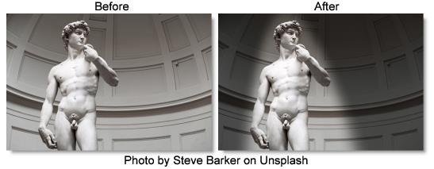

S_SpotLight
Description
Lights the input clip using one or two spotlights. For each enabled light, the intersection of a 3D light cone with the image plane is calculated using the given light source position, aim location, and beam angle. Ambient light can also be applied to affect the entire image evenly. A wide variety of lighting shapes can be produced.
The S_SpotLight filter comes from the Emmy award winning Boris FX Sapphire filter set.
Category
Light.
Controls
Presets
To select a preset, pick one from the Presets window.
Light1-2
Light1-2 Enable
Turns the spotlight on or off.
Light1-2 Bright
Scales the brightness of the spotlight. This value can be made negative for a dark spotlight effect.
Light1-2 Color
Determines the color of the spotlight.
Light1-2 Z
The distance of the light source from the image plane. Decreasing this brings the light source closer to the surface and causes the direction of the beam to be more parallel to the surface which can stretch the spot into an ellipse or hyperbola shape.
Light1-2
The position of this light source.
Spread Angle1-2
The spread angle of the spotlight beam in degrees. Larger values open up the beam for a larger spot.
Softness1-2.
Determines the amount of penumbra or the softness of the spotlight edges relative to the Spread Angle. Lower values make crisp edged shapes while higher values make softer shapes.
Falloff Power1-2
Determines how much the spotlight brightness fades with distance. A value of 0 causes no fading, 1 fades the light as distance increases, and 2 fades it faster with distance. A value of 2 is correct for a physically realistic point light.
Ambient Bright
The amount of ambient light included in the entire frame. This allows parts of the image outside of the spotlights to still be visible.
Ambient Color
Determines the color of the ambient light.
All Lights
All Lights Bright
Scales the brightness of all the spotlights together.
All Lights Color
Scales the color of all the spotlights together.
All Aims Shift X & Y
Adds this amount to all lights Aim parameters. This can be used to easily make all lights aim at the same location.
All Shift X & Y
Shifts the entire spotlight pattern without changing their shapes by adding this amount to all light and aim positions.
Combine
Determines how the light is combined with the image.
Lights Only
Renders only the light.
Mult
The light is multiplied by the image. This is the effect that a real light would typically have.
Add
The light is added to the image.
Screen
The light is blended with the image using a Screen operation.
Overlay
The light is combined with the image using an Overlay function.
Show Light1
Enables/disables the on-screen control for adjusting the Light1 parameter.
Show Aim1
Enables/disables the on-screen control for adjusting the Aim1 parameter.
Show Light2
Enables/disables the on-screen control for adjusting the Light2 parameter.
Show Aim2
Enables/disables the on-screen control for adjusting the Aim2 parameter.
Show All Aims Shift
Enables/disables the on-screen control for adjusting the All Aims Shift parameter.